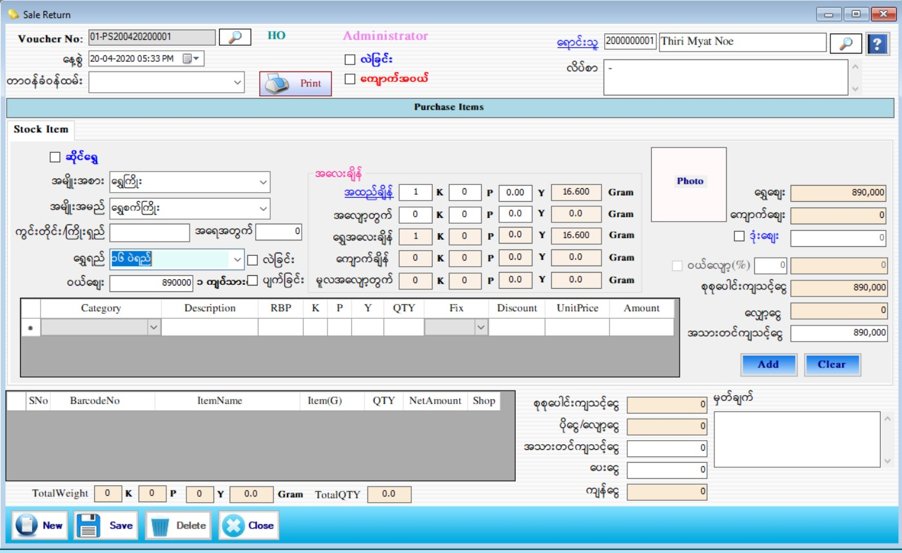

Purchase Stock Setup
PurchaseStock
PurchaseStock(GoldShop)
PurchaseStock(Gems)

- ပြန်လည်၀ယ်ယူသောပစ္စည်းများ သတ်မှတ်ရန်အတွက် Transaction အောက်ရှိ Purchase Stock ကို Click ပါ။
- Purchase Stock အထည်၀ယ်ခြင်းနှင့် ကျောက်၀ယ်ခြင်း ရှိပြီး Form စဖွင့်ခြင်းတွင် အထည်၀ယ်ခြင်း အတွက် Form စတင်တွေ့ရမည်ဖြစ်သည်။အထည်လဲမည်ဆိုပါက လဲခြင်း Check Box ကို on ထားရပါမည်။
- Voucher No.ကို Software မှ Auto တပ်ပေးမည်ဖြစ်ပါသည်။ Date တွင် Current Date ကိုပြပေးပါသည်။
- တာ၀န်ခံ ၀န်ထမ်းကိုရွေးချယ်ပါ။ရောင်းသူ၏ code နံပတ် ကိုအလွတ်သိရှိပါက ရိုက်ထည့်လိုက်လျှင် ရောင်းသူအမည်နှင့် လိပ်စာ ကျလာမည်ဖြစ်သည်။ ရောင်းသူ၏ code နံပတ် ကိုအလွတ်မသိရှိပါက ရောင်းသူဘေးရှိ မှန်ဘီလူကိုနှိပ်ပြီးရွေးချယ်ရပါမည်။
- အမျိုးအစား၊ အမျိူးအမည်၊ ကွင်းတိုင်း/ကြိုးရှည်၊ အရေအတွက်၊ ရွှေရည်တို့ကိုဖြည့်စွက်ပါ။ဆိုင်ရွှေဖြစ်ပါက ဆိုင်ရွှေ Check Box ကို on လိုက်ပါ။ဆိုင်ရွှေဘေးရှိ မှန်ဘီလူးကိုနှိပ်၍ ရောင်းသူ၀ယ်ယူခဲ့သော ပစ္စည်းမျာကိုစိတ်ကြိုက်ရွေးချယ်နိုင်ပါသည်။
- အပြင်ရွှေကိုပြန်လည်၀ယ်ယူပါက ဆိုင်ရွှေ Check Box ကို on စရာမလိုပဲ အမျိုးအစား၊ အမျိူးအမည်၊ ကွင်းတိုင်း/ကြိုးရှည်၊ အရေအတွက်၊ရွှေရည်၊ အထည်ချိန်၊ အလျှော့တွက်တို့ကိုဖြည့်စွက်ပြီး Add Button ကိုနှိပ်ပြီးသတ်မှတ်ထားနိုင်ပါသည်။
- ရွှေရည်တွင်ကျပ်သားချိန်ကိုရွေးချယ်ထားပါက အထည်ချိန်သတ်မှတ်ရာတွင် K/P/Y ကိုသာရိုက်ထည့်နိုင်မည် ဖြစ်ပြီး Gram ချိန်ရွေးထားပါက Gram အလေးချိန်ကိုသာရိုက်ထည့်နိုင်မည်ဖြစ်သည်။
- ရွေးချယ်လိုက်သောရွှေရည်အပေါ်မူတည်ပြီး၀ယ်စျေးကျလာမည်ဖြစ်သည်။ထို၀ယ်စျေးသည်စျေးသတ်မှတ်ခြင်း(Master SetupCurrent Price)တွင်နောက်ဆုံးသတ်မှတ်ခဲ့သောနေ့စွဲအချိန်၏၀ယ်စျေးကိုပြပေးပါသည်။ လဲစျေးကိုအမှန်ခြစ်လျှင်စျေးသတ်မှတ်ခဲ့ခြင်းတွင်သတ်မှတ်ခဲ့သောလဲစျေးနှုန်း(သို့မဟုတ်)ရာခိုင်နှုန်းကျလာမည်ဖြစ်သည်။ပျက်စျေးကိုအမှန်ခြစ်လျှင်စျေးသတ်မှတ်ခဲ့ခြင်းတွင်သတ်မှတ်ခဲ့သောလဲစျေးနှုန်း(သို့မဟုတ်)ရာခိုင်နှုန်းကျလာမည်။၀ယ်စျေး၊ လဲစျေး၊ ပျက်စျေး တို့ကို ရာခိုင်နှုန်းများသတ်မှတ်ထားခဲ့လျှင်ပေါက်စျေး(ရောင်းစျေး) ကို ရွှေချိန်ဖြင့်ဈေး တွက်ပြီး သတ်မှတ်ထားသောရာခိုင်နှုန်းကိုလျော့လိုက်မည်ဖြစ်ပါသည်။
- ကျောက်ပါသော အထည်ဖြစ်ပါက ဇယားကွက်ထဲတွင်ဖြည့်စွက်မည်များနှင့်တွက်ချက်ပေးမည့်အပိုင်းများသည် Stock Setup တွင်ပြောထားသည့်အတိုင်းလုပ်ဆောင်ရပါမည်။ အထည်ချိန်မှ ကျောက်အလေးချိန်ကို နှုတ်လိုက်ပါက ရွှေ အတင်အလေးချိန်ကို Auto ပြပေးပါလိမ့်မည်။
- ဒုံးဈေး ကိုသတ်မှတ်လိုပါက check box တွင် အမှန်ခြစ်လိုက်လျှင်ထိုအထည်တစ်ခုကို ဒုံးဈေးတစ်ခုဖြင့် ဈေးဖြတ် ဝယ်လိုက်ခြင်းဖြစ်ပါသည်။
- ဒုံးဈေးကိုအမှန်မခြစ်ပါက ရွှေအတင်အလေးချိန်ကိုဝယ်ဈေးနှင့်မြှောက်ပြီးတန်ဖိုးကို ရွှေဈေးတွင်တွေ့နိုင်ပါသည်။
- ဆိုင်ရွှေဖြစ်နေပါက ဝယ်သူအား အလျော့တွက်ကိုပြန်လည်ပေးလိုပါကလဲ လုပ်ဆောင်နိုင်ပါသည်။ဆိုင်ရွှေဖြစ်နေလျှင် အရောင်းကျသင့် ငွေကျလာသောကြောင့် အရောင်းကျသင့်ငွေပေါ်မူတည်ပြီး ဝယ်လျော့ရာခိုင်နှုန်းကိုလျော့ပြီးပြန်ဝယ်နိုင်ပါသည်။
- ကျောက်ပါရှိပါက ကျောက်ဈေးတွင်စုစုပေါင်းကျောက်၏တန်ဖိုးကို ကျောက်ဈေးတွင်တွေ့နိုင်ပါသည်။ကျောက်ကိုရာခိုင်နှုန်းလျော့ပြီး လဲပြန်လည်ဝယ်ယူနိုင်ပါသည်။
- ထို့နောက်Add Buttonနှိပ်ပြီး Dataများဖြည့်သွင်းပေးရမည်။
- အသားတင်ကျသင့်ငွေ၊ ပေးငွေ၊ မှတ်ချက် တွင် ဖြည့်စွက်ပါ။ စုစုပေါင်းကျသင့်ငွေ၊ ပိုငွေ-လျှော့ငွေ၊ ကျန်ငွေ တို့တွင် Software မှ Auto ကျပေးမည် ဖြစ်သည်။
- Data များဖြည့်စွက်ပြီးပါက Save Button ကိုနှိပ်၍ သိမ်းဆည်းနိုင်ပါသည်။ Purchase Invoice Voucher ထုတ်လိုလျှင် Print Button ကိုနှိပ်၍ Voucher ထုတ်နိုင်ပါသည်။
- သိမ်းဆည်းပြီးသား Data များအား ပြန်လည်ကြည့်ခြင်း၊ ပြင်ဆင်ခြင်းများပြုလုပ်ချင်ပါက Voucher No ၏ ဘေးတွင် ရှိသော မှန်ဘီလူး button ကိုနှိပ်ပြီးပြန်လည်ကြည့်ရှုပြင်ဆင်ချင်သော Purchase Item အား ရွေးချယ် ပြီးပြင်နိုင် ပါသည်။
- သိမ်းဆည်းပြီးသား ထည့်ပြီးသား Data များကို ဖျက်လိုလျှင် မှန်ဘီလူး button အားနှိပ်ပြီးရှာပါ။ ထို့နောက် မိမိဖျက်လိုသော Data ကို Delete Button ကိုနှိပ်၍ ဖျက်နိုင်ပါသည်။
- Purchase Stock အသစ်ထည့်လိုပါက New Button ကိုနှိပ်ပြီး အသစ်ထည့်နိုင်ပါသည်။
- Purchase Stock Form အား အသုံးပြုပြီးပါက Close Button ကိုနှိပ်၍ ပိတ်နိုင်ပါသည်။